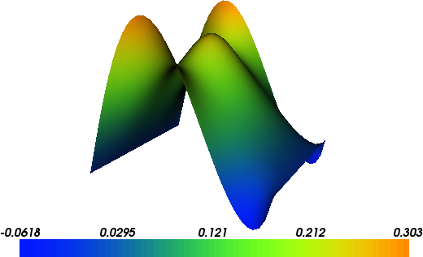

Poisson equation¶
This demo is implemented in a single Python file,
demo_poisson.py, which contains both the variational forms
and the solver.
This demo illustrates how to:
Solve a linear partial differential equation
Create and apply Dirichlet boundary conditions
Define Expressions
Define a FunctionSpace
Create a SubDomain
The solution for \(u\) in this demo will look as follows:
{kind=link}
Equation and problem definition¶
The Poisson equation is the canonical elliptic partial differential equation. For a domain \(\Omega \subset \mathbb{R}^n\) with boundary \(\partial \Omega = \Gamma_{D} \cup \Gamma_{N}\), the Poisson equation with particular boundary conditions reads:
Here, \(f\) and \(g\) are input data and \(n\) denotes the outward directed boundary normal. The most standard variational form of Poisson equation reads: find \(u \in V\) such that
where \(V\) is a suitable function space and
The expression \(a(u, v)\) is the bilinear form and \(L(v)\) is the linear form. It is assumed that all functions in \(V\) satisfy the Dirichlet boundary conditions (\(u = 0 \ {\rm on} \ \Gamma_{D}\)).
In this demo, we shall consider the following definitions of the input functions, the domain, and the boundaries:
\(\Omega = [0,1] \times [0,1]\) (a unit square)
\(\Gamma_{D} = \{(0, y) \cup (1, y) \subset \partial \Omega\}\) (Dirichlet boundary)
\(\Gamma_{N} = \{(x, 0) \cup (x, 1) \subset \partial \Omega\}\) (Neumann boundary)
\(g = \sin(5x)\) (normal derivative)
\(f = 10\exp(-((x - 0.5)^2 + (y - 0.5)^2) / 0.02)\) (source term)
Implementation¶
This description goes through the implementation (in
demo_poisson.py) of a solver for the above described
Poisson equation step-by-step.
First, the dolfin module is imported:
from dolfin import *
We begin by defining a mesh of the domain and a finite element
function space \(V\) relative to this mesh. As the unit square is
a very standard domain, we can use a built-in mesh provided by the
class UnitSquareMesh. In order
to create a mesh consisting of 32 x 32 squares with each square
divided into two triangles, we do as follows
# Create mesh and define function space
mesh = UnitSquareMesh(32, 32)
V = FunctionSpace(mesh, "Lagrange", 1)
The second argument to FunctionSpace is the finite element
family, while the third argument specifies the polynomial
degree. Thus, in this case, our space V consists of first-order,
continuous Lagrange finite element functions (or in order words,
continuous piecewise linear polynomials).
Next, we want to consider the Dirichlet boundary condition. A simple
Python function, returning a boolean, can be used to define the
subdomain for the Dirichlet boundary condition (\(\Gamma_D\)). The
function should return True for those points inside the subdomain
and False for the points outside. In our case, we want to say that
the points \((x, y)\) such that \(x = 0\) or \(x = 1\) are
inside on the inside of \(\Gamma_D\). (Note that because of
rounding-off errors, it is often wise to instead specify \(x <
\epsilon\) or \(x > 1 - \epsilon\) where \(\epsilon\) is a
small number (such as machine precision).)
# Define Dirichlet boundary (x = 0 or x = 1)
def boundary(x):
return x[0] < DOLFIN_EPS or x[0] > 1.0 - DOLFIN_EPS
Now, the Dirichlet boundary condition can be created using the class
DirichletBC. A
DirichletBC takes three
arguments: the function space the boundary condition applies to, the
value of the boundary condition, and the part of the boundary on which
the condition applies. In our example, the function space is V,
the value of the boundary condition (0.0) can represented using a
Constant and the
Dirichlet boundary is defined immediately above. The definition of the
Dirichlet boundary condition then looks as follows:
# Define boundary condition
u0 = Constant(0.0)
bc = DirichletBC(V, u0, boundary)
Next, we want to express the variational problem. First, we need to
specify the trial function \(u\) and the test function \(v\),
both living in the function space \(V\). We do this by defining a
TrialFunction
and a TestFunction on the previously defined
FunctionSpace V.
Further, the source \(f\) and the boundary normal derivative
\(g\) are involved in the variational forms, and hence we must
specify these. Both \(f\) and \(g\) are given by simple
mathematical formulas, and can be easily declared using the
Expression class.
Note that the strings defining f and g use C++ syntax since,
for efficiency, DOLFIN will generate and compile C++ code for these
expressions at run-time.
With these ingredients, we can write down the bilinear form a and
the linear form L (using UFL operators). In summary, this reads
# Define variational problem
u = TrialFunction(V)
v = TestFunction(V)
f = Expression("10*exp(-(pow(x[0] - 0.5, 2) + pow(x[1] - 0.5, 2)) / 0.02)", degree=2)
g = Expression("sin(5*x[0])", degree=2)
a = inner(grad(u), grad(v))*dx
L = f*v*dx + g*v*ds
Now, we have specified the variational forms and can consider the
solution of the variational problem. First, we need to define a
Function u to
represent the solution. (Upon initialization, it is simply set to the
zero function.) A Function represents a function living in
a finite element function space. Next, we can call the solve function with the arguments a == L,
u and bc as follows:
# Compute solution
u = Function(V)
solve(a == L, u, bc)
The function u will be modified during the call to solve. The
default settings for solving a variational problem have been
used. However, the solution process can be controlled in much more
detail if desired.
A Function can be
manipulated in various ways, in particular, it can be plotted and
saved to file. Here, we output the solution to a VTK file (using
the suffix .pvd) for later visualization and also plot it using
the plot command:
# Save solution in VTK format
file = File("poisson.pvd")
file << u
# Plot solution
import matplotlib.pyplot as plt
plot(u)
plt.show()